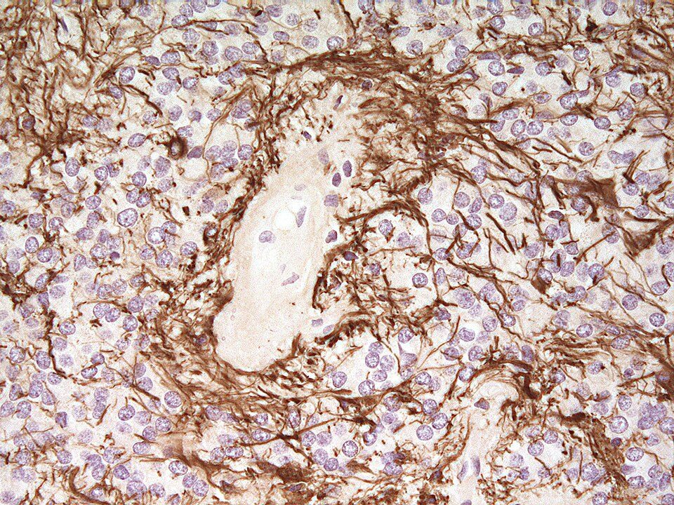

General information only. It does not replace advice from your care team and should not be used to choose a treatment.


At a glance
| How common | 5-10% of childhood brain tumours; 2-3% in adults |
| Where | Posterior fossa and supratentorial (children); spinal cord (adults) |
| Groups | Defined by location and biology (ZFTA, YAP1, PFA, PFB, myxopapillary) |
| Treatment | Complete surgery and radiotherapy |
What it is
It arises from ependymal cells, lining the ventricles and the central canal of the spinal cord. Since 2021 it is classified by location and molecular profile: posterior fossa group A (PFA) ependymoma in young children is the most aggressive; adult spinal tumours (including myxopapillary, sometimes linked to neurofibromatosis type 2) have a good outlook.
Treatment
- Complete removal: the most important prognostic factor; sometimes a second operation.
- Local radiotherapy (with protons in children).
- Chemotherapy plays a limited role.
Outlook
Five-year survival is 70-80% in children with complete resection; better for adult spinal tumours.
See also: Medulloblastoma, Brain tumours, Childhood cancer.
History · Medicapedia
Ependymoma in the history of medicine
How it was discovered, who studied it and how its treatment changed over the centuries, told on Medicapedia, our sister site on the history of medicine.
Read the history on Medicapedia ↗Sources
- Louis DN, et al. The 2021 WHO Classification of Tumors of the Central Nervous System: a summary. Neuro Oncol. 2021;23:1231-1251. doi:10.1093/neuonc/noab106
- Rudà R, et al. EANO guidelines for the diagnosis and treatment of ependymal tumors. Neuro Oncol. 2018;20:445-456.
- NCI. Childhood ependymoma treatment (PDQ). cancer.gov/types/brain